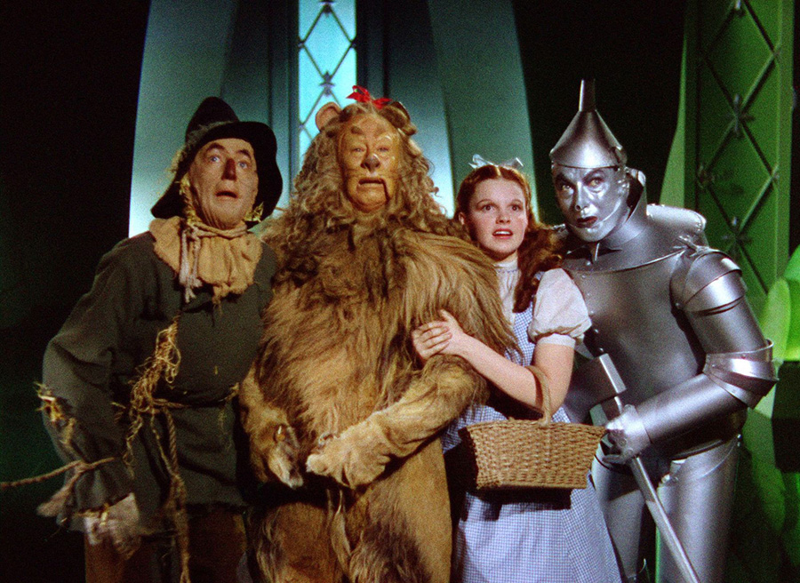

Then she went back to the house, and having helped herself and Toto to a good drink of the cool,
clear water, she set about making ready for the journey to the City of Emeralds.
Dorothy had only one other dress, but that happened to be clean and was hanging on a peg beside
her bed. It was gingham, with checks of white and blue; and although the blue was somewhat
faded with many washings, it was still a pretty frock. The girl washed herself carefully, dressed
herself in the clean gingham, and tied her pink sunbonnet on her head. She took a little basket
and filled it with bread from the cupboard, laying a white cloth over the top. Then she looked
down at her feet and noticed how old and worn her shoes were.
"They surely will never do for a long journey, Toto," she said. And Toto looked up into her face
with his little black eyes and wagged his tail to show he knew what she meant.
At that moment Dorothy saw lying on the table the silver shoes that had belonged to the Witch of
the East. "I wonder if they will fit me," she said to Toto.
"They would be just the thing to take a long walk in, for they could not wear out."
She took off her old leather shoes and tried on the silver ones, which fitted her as well as if they
had been made for her.
”Come along, Toto," she said. "We will go to the Emerald City and ask the Great Oz how to
get back to Kansas again."
She closed the door, locked it, and put the key carefully in the pocket of her dress. And so,
with Toto trotting along soberly behind her, she started on her journey.
There were several roads near by, but it did not take her long to find the one paved with
yellow bricks. Within a short time she was walking briskly toward the Emerald City, her
silver shoes tinkling merrily on the hard, yellow road-bed. The sun shone bright and the
birds sang sweetly, and Dorothy did not feel nearly so bad as you might think a little girl
would who had been suddenly whisked away from her own country and set down in the
midst of a strange land.
… as she walked along, to see how pretty the country was about her. There were neat
fences at the sides of the road, painted a dainty blue color, and beyond them were fields of
grain and vegetables in abundance. Evidently the Munchkins were good farmers and able
to raise large crops. Once in a while she would pass a house, and the people came out to
look at her and bow low as she went by; for everyone knew she had been the means of
destroying the Wicked Witch and setting them free from bondage. The houses of the
Munchkins were odd-looking dwellings, for each was round, with a big dome for a roof. All
were painted blue, for in this country of the East blue was the favorite color.
Toward evening, when Dorothy was tired with her long walk and began to wonder where
she should pass the night, she came to a house rather larger than the rest. On the green
lawn before it many men and women were dancing. Five little fiddlers played as loudly as
possible, and the people were laughing and singing, while a big table near by was loaded
with delicious fruits and nuts, pies and cakes, and many other good things to eat.
The people greeted Dorothy kindly, and invited her to supper and to pass the night with
them; for this was the home of one of the richest Munchkins in the land, and his friends
were gathered with him to celebrate their freedom from the bondage of the Wicked Witch.
Dorothy ate a hearty supper and was waited upon by the rich Munchkin himself, whose
name was Boq. Then she sat upon a settee and watched the people dance.
When Boq saw her silver shoes he said, "You must be a great sorceress."